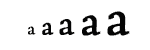

Todo lo que aparece dentro de la etiqueta
será la información visible de la página: los títulos, cabecera, listados, fotos, enlaces, vídeos, GIFs… Las funciones y etiquetas que vamos a aprender a modificar en este artículo estarán en su mayoría dentro del cuerpo . Puede ser que alguna vez tengas que tocar algún elemento del pero serán las menos (si tuvieras que editar la descripción del sitio o añadir el código de seguimiento de Analytics, por ejemplo). Por lo demás, en tu día a día como Community Manager tocarás lo que está dentro del .Para poner el texto en negrita utilizaremos la etiqueta Texto en negrita o Este texto también va en negrita
Para que el texto esté en cursiva utilizamos la etiqueta Usamos la etiqueta i para poner la letra en cursiva
Y para subrayar utilizamos la etiqueta u y lo subrayamos.
Si quieres tachar algo, la etiqueta que tienes que utilizar es y cerrarlo después con . Todo lo que esté entre las dos etiquetas aparecerá con una línea por el medio.
"Los encabezados en HTML sirven para estructurar el contenido y decirle al buscador qué es lo más importante y lo menos dentro de un documento. Las etiquetas de los títulos son los H famosos: desde el H1 que da título al artículo que vayas a editar hasta H5, H6, H7… Las etiquetas más utilizadas sin lugar a dudas son el H1, que sirve para poner título a un artículo y el H2 y H3 para estructurar la información. Además, estas etiquetas son muy importantes para poner las palabras clave por las que queremos que nos encuentren en el buscador. Igual que las demás, las etiquetas deben cerrarse con h1, h2…"
"Si ves esto " Texto de ejemplo con tipografía … ¡ALÉJATEEEEEEEE! Esta etiqueta ya no se utiliza. Debes apoyarte en hojas de estilo para este tipo de cosas. Y lo mismo sucede con el…
tampoco se utiliza ni creo que lo veas en ningún documento HTML.
